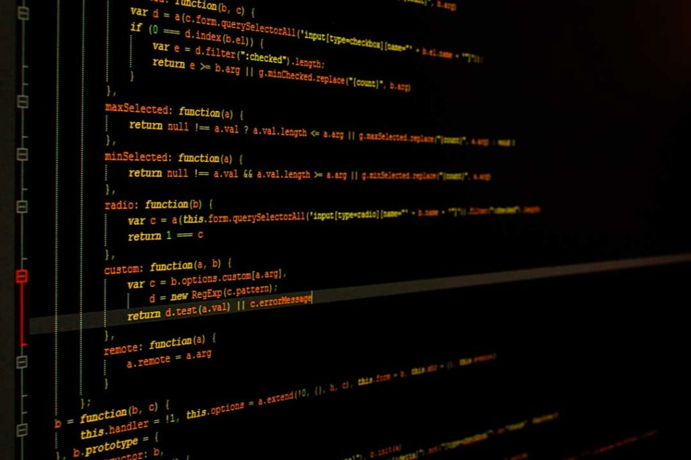

¿Quienes somos?
Programacion
La tecnología ha cambiado la forma en que vivimos, especialmente con la pandemia, lo que la hace crucial para el trabajo remoto, el aprendizaje en línea y el contacto desde lejos. Muchas de estas herramientas se basan en la programación. Aprender a codificar te permite disfrutar usando la tecnología y también inventar nuevas soluciones tecnológicas.


Programar significa decirle a una computadora qué hacer Es un poco como aprender un nuevo lenguaje donde "comandos" son las palabras que se usan para hablar con la computadora" Este mensaje se envía usando diferentes lenguajes de codificación, como C++, JavaScript y HTML, y más"
Aprender a programar abre muchas puertas. No solo puede ayudarte a crear aplicaciones o sitios web que satisfagan tus propias necesidades o las de otros, sino que también es una habilidad muy útil que a la gente le gusta en sus trabajos. Muchas empresas quieren personas que sepan codificar, porque las computadoras son importantes. para la economía mundial.


Mantenimiento Industrial
La carrera de Mantenimiento Industrial prepara profesionistas capacitados para desempeñarse en el ámbito del mantenimiento de máquinas y equipos industriales.
El ingeniero en mantenimiento industrial y funciones que desempeña
- Gerente de mantenimiento
- Gerente de planta
- Ingeniero de mantenimiento
- Gerente de proyectos
- Jefe de departamento.

Aprender correctamente los procesos de manufactura es fundamental para esta carrera. Un proceso de manufactura es la evolución de las materias primas hasta convertirse en productos finalizados.
Para un ingeniero en mantenimiento industrial es fundamental entender muy bien este proceso, ya que sólo de esta forma podrá optimizarlo siguiendo las normas necesarias.
Para un ingeniero en mantenimiento industrial es fundamental entender muy bien este proceso, ya que sólo de esta forma podrá optimizarlo siguiendo las normas necesarias.
Reciclaje
Reducir los desechos ayuda a que menos basura llegue a los montones de basura y a los fondos marinos Muchos plásticos dañan los hábitats y las criaturas oceánicas El reciclaje evita que la basura se acumule, lo que ayuda a mantener la tierra limpia
El reciclaje implica un menor uso de energía en comparación con la fabricación de nuevos materiales desde cero El uso de papel reciclado es más eficiente energéticamente y requiere solo el 60% de la energía en comparación con su producción a partir de materias prima
Si todos trabajamos juntos para usar menos, reutilizar más y reciclar, podemos ayudar a combatir el cambio climático y cuidar nuestra Tierra Al enseñar a los niños sobre el reciclaje y el cuidado de nuestro planeta, ayudamos a hacer del mundo un lugar mejor